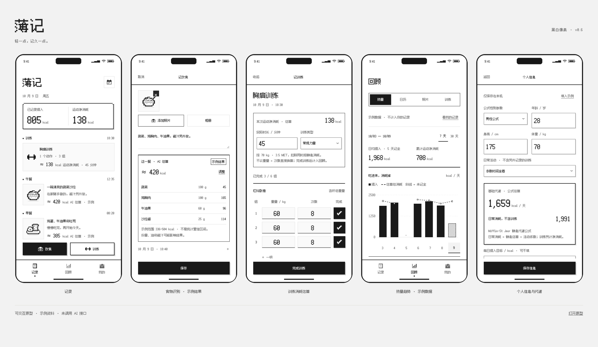

v0.6 — 在记录上增加估算，不把生活变成一张分数表。
黑白像素 · Fusion Pixel| 界面 | 新增能力 | 主要动作 |
|---|---|---|
| 记录 | 当天已记录摄入、运动净消耗；每餐与每次训练显示 kcal、来源及估算状态 | 点记录查看明细；点顶部数字进入热量回顾 |
| 记饮食 | 照片与备注 → 识别状态 → 总热量、食物组成、份量、估算范围 | 先保存也可以；调整克数按比例更新 kcal，或直接改 kcal |
| 记训练 | 体重快照、实际训练时长、训练类型 → 实时显示净消耗 | 补时长，确认实际完成组；完成后计入回顾 |
| 回顾 | 热量 / 日历 / 照片 / 训练；7 天与 30 天趋势、逐日详情、热量差值 | 切范围、点日期、展开数值表；「完整示例」不改变真实记录 |
| 我的 | 个人信息与代谢、食物 AI 设置 | 填写身高体重等信息；管理自动估算偏好 |
必填公式性别参数、年龄、身高、体重、日常活动。没有资料时不编造基础代谢；可点击「填入示例」查看效果。原型限定 18–59 岁普通成年人，其他人群需另行设计与验证。性别字段描述的是公式参数，不是性别认同。
「基础代谢」界面项采用 Mifflin–St Jeor 的静息代谢估算：10 × kg + 6.25 × cm − 5 × 年龄 + 常数（男性 +5；女性 −161）。它不是精确测量，也不等于每日应该吃多少。公式来源：Mifflin 等，1990 原始论文。
原型日常消耗 = 静息估算 × 日常活动系数（1.2 / 1.35 / 1.5，不含专门记录的训练）。系数为本产品简化估算假设，不声称是个体测量。正式版应校准并审查活动系数的适用性。保存资料从当前选定日期生效，历史日期按当时的资料版本取值。每日摄入目标由用户自行填写；不根据减脂目标自动生成极端缺口。
重量 × 次数 × 组数用于训练量记录，不能直接换算代谢消耗。估算补充实际时长（含常规组间休息，去掉长时间中断）、体重及训练类型：常规力量 3.5 MET，深蹲／硬拉为主 5 MET，高强度力量 6 MET。来源：2024 Adult Compendium · Conditioning Exercise。
总运动消耗 ≈ MET × 3.5 × kg ÷ 200 × 分钟。界面和汇总采用运动净消耗 ≈ (MET − 1) × 3.5 × kg ÷ 200 × 分钟，扣除同一时段静息消耗，避免与日常基线重复计算。该人群平均模型对个人仍可能有较大偏差。
一次训练只估算一次，不把每个动作分别估算后重复相加。未完成的参考组不算完成组；草稿不计入统计。复制上次训练不复制本次时长与热量。缺体重或时长仍可保存记录，但显示「待估算」，不以 0 冒充已知值。保存时保留体重、MET、时长与算法版本快照。
生产流程：图片与备注 → 用户授权 → 安全后端 → 多模态大模型 → 结构化食物项与份量 → 营养数据校验／估算汇总 → 用户修正 → 记录保存。当前前端只演示这条流程的交互，不包含真实代理服务。
| 状态 | 界面处理 |
|---|---|
| 未授权 / 未连接 | 原始记录照常保存；说明将发送哪些资料、供应商、保留政策、费用；获得同意后才能发图 |
| 排队 / 识别中 | 不阻塞保存；返回结果按记录 ID 与输入版本关联，显示进度文字 |
| 成功 / 有不确定性 | 显示约 kcal、份量、来源，提示油、酱汁、剩余量等无法仅凭照片确定的信息 |
| 失败 / 超时 / 限流 | 不填 0；保留照片与文字，支持重试或手动输入，不做无限后台重试 |
| 离线 | 标为待联网，仅经用户授权后排队；在删除记录或撤回授权时取消任务 |
| 手动修正 / 输入过期 | 用户值优先；保存原始估算与修正历史。更换照片或备注后将旧结果标为待重估，不静默覆盖人工结果 |
接口建议：
POST /v1/food-estimates
request: { record_id, input_revision, image_refs[], note, locale }
response: {
job_id, record_id, input_revision, status,
items: [{ name, estimated_grams, kcal, assumptions[] }],
total_kcal, estimate_range: { low, high },
questions[], source, model, model_version, created_at
}
认证、密钥、供应商适配和调用预算由后端控制；不把密钥写入前端、Cloud Drive 导出包或聊天记录。客户端可通过 job ID 轮询任务。请求幂等，校验有限数值、非负值、项目合计；识别仅返回数据，不执行图片／备注中的指令。删除记录后丢弃迟到结果；输入版本不一致时保留旧结果但不计入当前统计。正式版范围来自明确份量假设，不把模型自报“置信度”伪装成统计置信区间。
第一张图：实心柱为用户确认记全的摄入；斜线柱为未记全的已知摄入；虚线为当日估算总消耗（静息 + 日常活动增量 + 运动净消耗）。缺数据处断开，不补 0。点日期查看来源与缺口；30 天用日期选择器保留清楚的触控目标。
第二张图：摄入 − 估算总消耗。只画用户确认记全、所有餐食与训练均有估算且存在个人资料快照的日期。正负分别表示估算盈余／缺口，不使用红绿评价。日均摄入只对记全天取平均，并显示样本天数。未记录的运动不被自动推断为已发生；「已记全」由用户确认。
原型图表读取本地实际记录；「看完整示例」是独立的只读演示序列，不写入记录、不导出、不影响统计。样例个人信息不会自动填进用户资料。AI 示例可以保存，但每条都带 demo-ai 来源标签。导出沿用完整 JSON，包含热量来源、修正记录、个人资料版本与训练计算快照；分享前应提示其中包含个人身体信息。
像素视觉借鉴《星露谷物语》的物品栏与边框语言，全部插画和图标均为原创 SVG，不使用游戏素材。字体来源：Fusion Pixel 官方项目，随包附带 SIL OFL 1.1 许可。
更新为黑白像素视觉：全套 Fusion Pixel 字体、原创像素图标、硬边框与方角图表；保留原始照片显示方式和饮食／训练主流程。没有增加社交、订阅或 AI 聊天页。浏览器验证范围：个人信息计算与持久化、输入校验、手动热量修正、识别中／失败状态、训练消耗计算、复制清除旧时长、历史快照、统计完整度、7 / 30 天和 320 / 393px 排版、原有记录与导出流程。
尚未验证：真实供应商接口、真实识别精度、原生相机与键盘、VoiceOver、Dynamic Type、iCloud 和跨设备同步。正式上线前还需隐私政策、用户授权及健康信息相关审核。
